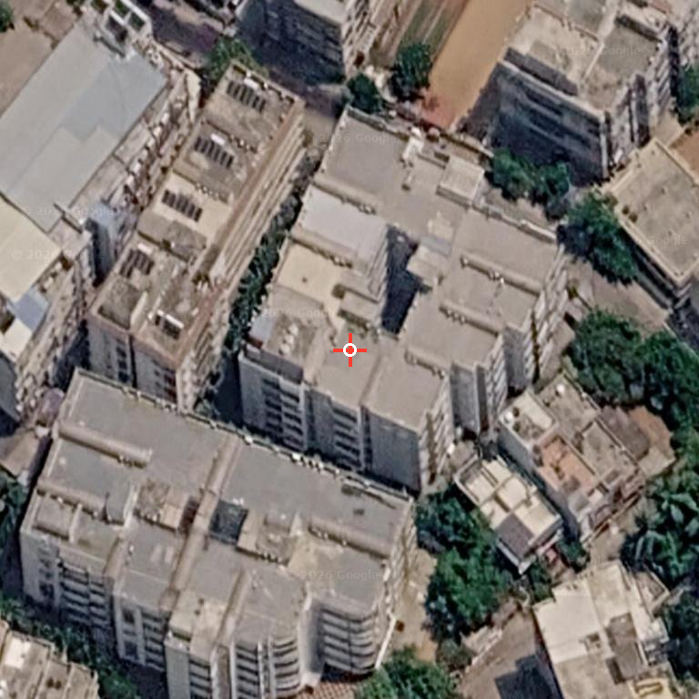

Concrete Opus Apartments
17.4301484, 78.5538058
~5-7 floors~100-160 units, visual estimate
Main blocks appear low/mid-rise with clear concrete roof areas and no obvious PV grid on the target roof. Adjacent buildings have some panel-like structures, so verify boundary on site.